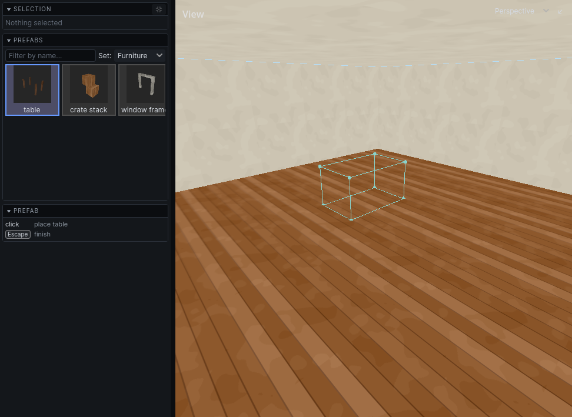
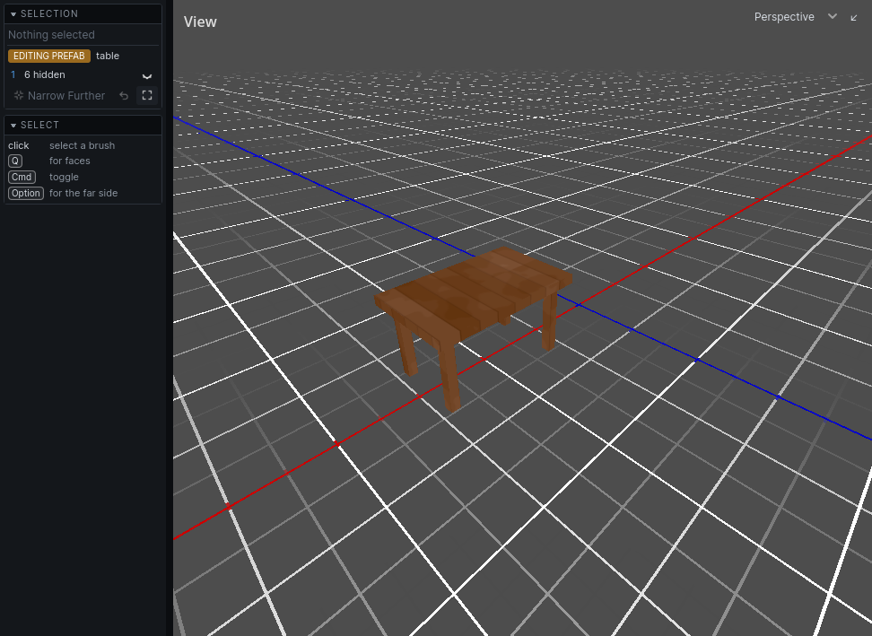

Prefabs
A prefab is a piece of level you made once and place many times: a window frame, a market stall. Each placed copy is an instance. Edit the prefab and every instance changes.
Prefabs live in prefab sets, files your game loads. The editor can only add to a set your game has loaded.
Make a prefab
- Select the brushes and entities.
- Press
Cmd[. - Enter a Prefab Name, choose the Target Set, and optionally a Category.
- Click OK.
The editor draws a thumbnail for the browser. What you selected becomes the prefab's first instance.
Cmd Z undoes the whole thing: the prefab leaves the set and the selection is plain brushwork again. The set is left marked as changed, so save it when you do mean to keep one.
Place a prefab
- Press
CmdShift[. The prefab browser opens in the left panel. - Choose a Set and click a prefab. Type in the filter field to find one by name.
- Move over a view. A box shows where it will go, resting on the surface under the cursor and snapped to the grid.
- Click to place it. Right-click cancels.
- Click the prefab in the browser again to place another. Press
Escwhen done.

Work with instances
| Do | How |
|---|---|
| Select a whole instance | click any part of it |
| Duplicate an instance | Cmd Shift D, then click to drop the copy |
| Straighten a turned instance | Cmd Shift R |
| Turn an instance back into plain brushes and entities | Ctrl [ |
Placing an instance and breaking one are each one undo step.
Edit a prefab
Shift-click an instance. The editor narrows to it, and the Selection panel says EDITING PREFAB.- Edit it like anything else. Changes are written back to the prefab.
- Press
CmdNwith nothing selected to finish. - Save with File → Save Modified Prefab Sets. Saving the map saves them too.
